決策 01
首頁要長什麼樣子
- 情境
- 孩子要能玩，家人要能收藏和分享，兩件事的節奏完全不同。
- 選項
- 桌上的手作小島 博物館展覽室 小星球
- 決定
- 小島和展覽室都要，分成兩個畫面：小島給孩子，展覽室給收藏；在小島點作品，可以直接去它在展覽室的展台。分享連結預設開在展覽室。小星球留作品牌形象。
- 結果
- 一個產品同時服務兩種節奏，不用為了其中一邊犧牲另一邊。
家裡小朋友 4 到 6 歲做的黏土、陶土、春聯和紙火雞，會裂、會褪色、會被拆掉。我把它們照實物重建成可以轉、會動的 3D，放進一座小島和一間展覽室：孩子在島上玩，家人在展覽室收藏、分享。第一版只服務一個家庭，用來定下品質標準和體驗，之後才決定怎麼讓每個孩子上傳自己的作品。
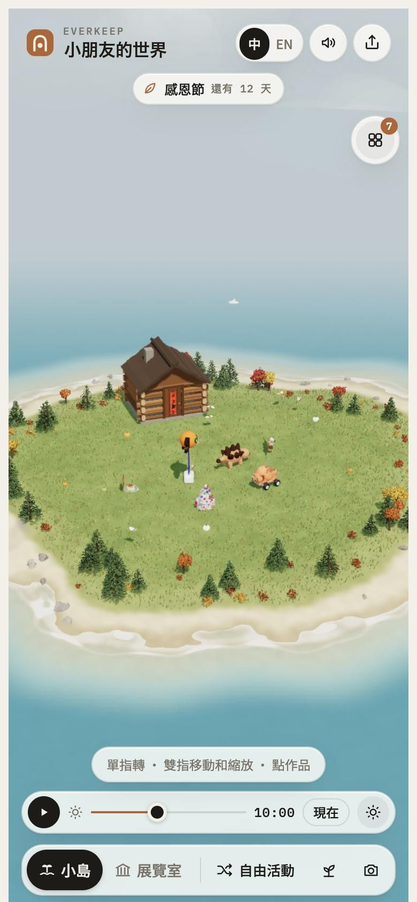
每個家裡都有一個角落堆著孩子的作品。家長的選擇通常只有三種，而每一種都在丟掉一些東西。
三種人要的節奏完全不同。產品結構就是從這個差異長出來的。
會想轉一下、擺一下、看一下，但不會長時間玩，也還不太讀字。要大按鈕、可以拖、點一下就有反應。
想收藏、整理、拿去分享，也要能決定孩子什麼時候可以玩。新作品進來時，希望不用多花力氣。
不下載、不登入，在手機上打開就看得到。看到的是一件有編號、有年齡、有原作照片的作品，而不是一個遊戲。
最終的目標是讓每個孩子上傳照片，就長出自己的世界。但在自動化之前，要先知道「好」長什麼樣子。我把路線拆成三段，每一段只回答一個問題，前一段的答案是後一段的規格。
品牌叫 Everkeep 而不是「某某島」，就是為了這一段：小島只是第一個區域，之後的世界可以照作品的種類長出別的地方。
每個零件都在正面照片上量過大小、位置和輪廓；左右不對稱就做成不對稱。孩子要一眼認得是自己的，這是整個產品信任的起點。
裂縫、霉斑、斷掉的接縫不做；手捏的凹凸、指壓痕、釉積得深淺不一要留。在真實的前提下，稍微美化。
每件都有一個屬於它的動作：劍龍繞圈走、火雞開屏、春聯上的「如」字變成雞去送外送。待著不動時，也會輕輕呼吸。
兩件事分成兩個畫面。小島可以隨便玩；展覽室安靜、有說明牌，分享連結預設開在這裡。
大按鈕、圖示、點一下就有反應。說明收進展品牌，點了才展開；最主要的「看完整 3D」永遠露在外面。
不登入，可以加到手機主畫面、離線也打得開。AR 放到桌上是實物大小，3D 列印檔可以直接印。
產品的骨架是一條線：一件實物進來，變成可以轉的 3D，分到兩個畫面，最後再以實物大小回到桌上。
6 歲的孩子不會長時間玩，所以世界要自己會變：每次打開都有一點不一樣，不需要新功能。
有時要控制小朋友去玩小島。但產品刻意沒有帳號。
單一家庭版本最重要的產出，不是七件作品，而是一套可以交接、之後可以自動化的品質標準。第一件小劍龍做到的細節度，定成之後每一件的最低標準；流程寫成方法論，新作品照著走。
做達利鳥時，比對鏡頭的傾斜方向用反了，照著一個歪了 16 度的基準修了好幾輪翅膀，越修越錯。第 3 步就是從這裡來的：連續兩三輪對不上，先停下來檢查方法和基準。
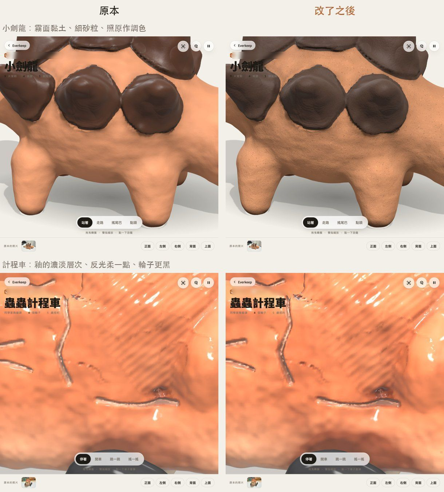
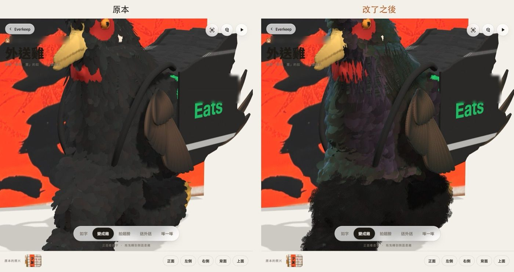
| 項目 | 方法 | 結果 |
|---|---|---|
| 自動重建可行性 | Object Capture 跑四件的現有照片 | 4 件中 1 件可用（計程車 21 張、37 秒） |
| 打開速度 | 只細算表面附近；計程車改讀先算好的模型檔，其他件在手機上現場算 | 外送雞、火雞、聖誕樹 < 0.2 秒 |
| AR 放到桌上 | 每件輸出 USDZ（iPhone）和 GLB（Android），實物大小；USDZ 用 Apple 的 ARKit 檢查工具驗過 | 7 件都有，會動 |
| 裝置 | 每次改完都看 390px 手機寬、深淺色、中英文；iPhone 各家瀏覽器都給 AR 連結，電腦改顯示 QR code | 固定的交付規則 |
| 還沒驗證的 | 聲音的音色還要真人聽過再調；iPhone Safari 的錄影和分享影片沒在真機上試；中國大陸能不能穩定打開沒實測 | 照實列出 |
以下都是手機上的實際畫面，畫面裡的名字已經遮掉。
底部一條控制列切換兩個畫面；選了作品，控制列變成它的動作列。展覽室照年齡排，上方是成長時間軸。
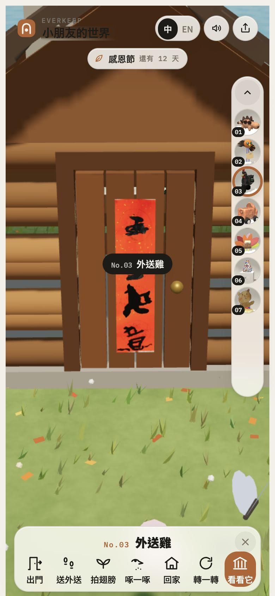
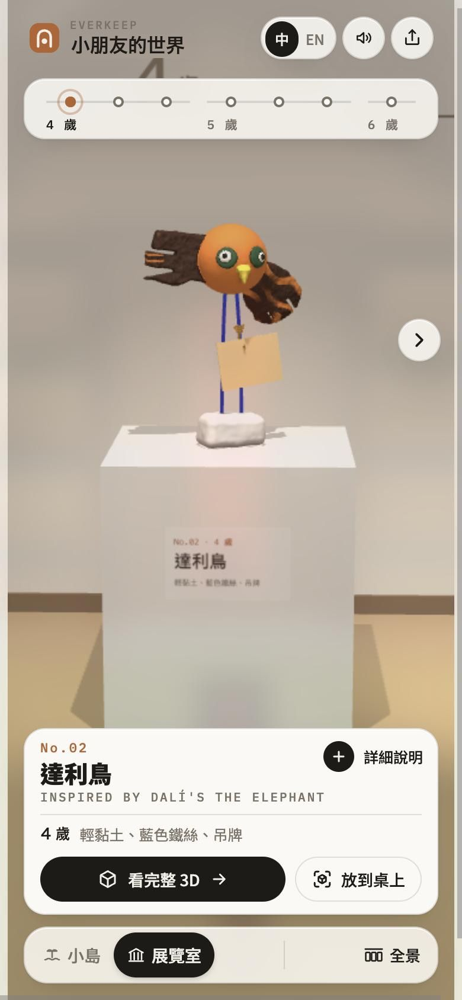
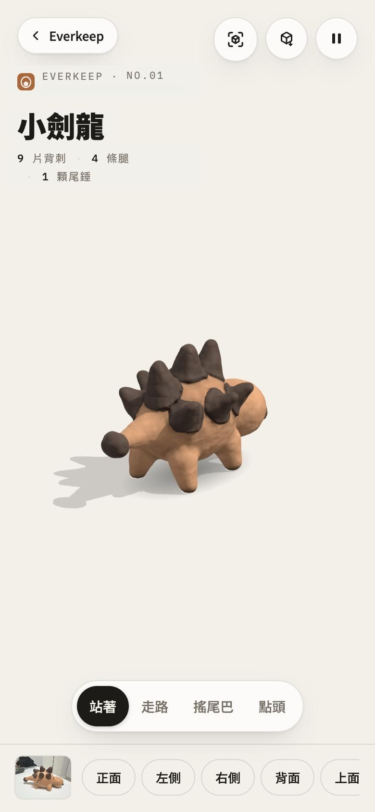
編號照加入 Everkeep 的順序，展覽室照年齡排。每件的材料都不一樣，所以每件的做法也不一樣。
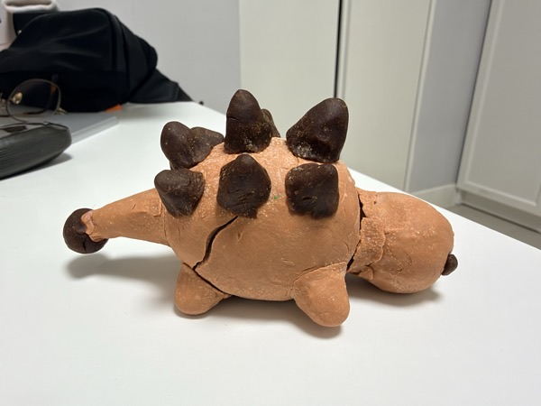
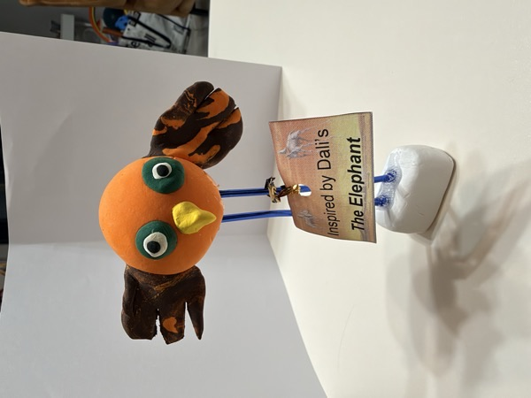
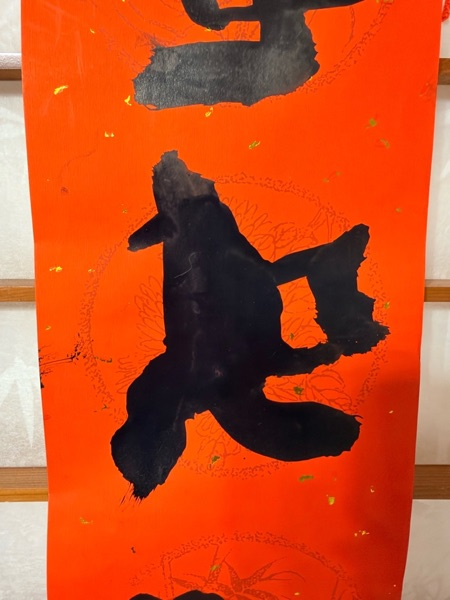
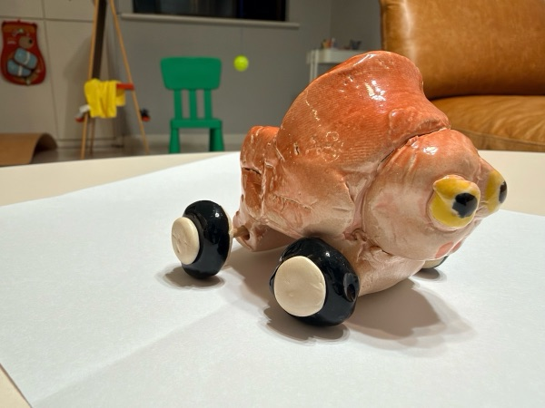
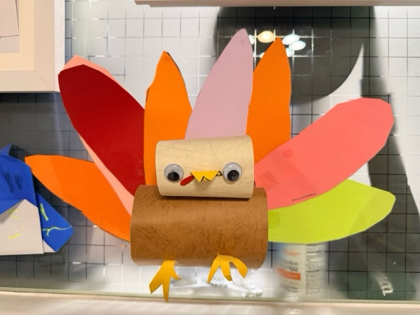
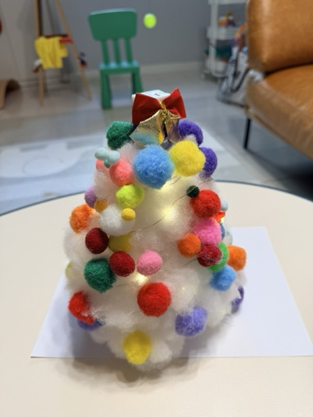
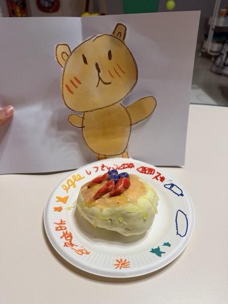
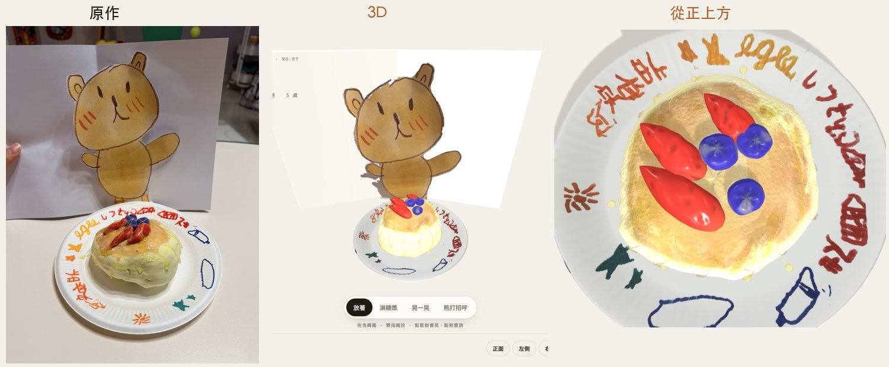
決策 04 的三欄對照：原本、當時上線、調整後。白天、近看、傍晚、晚上各一列。
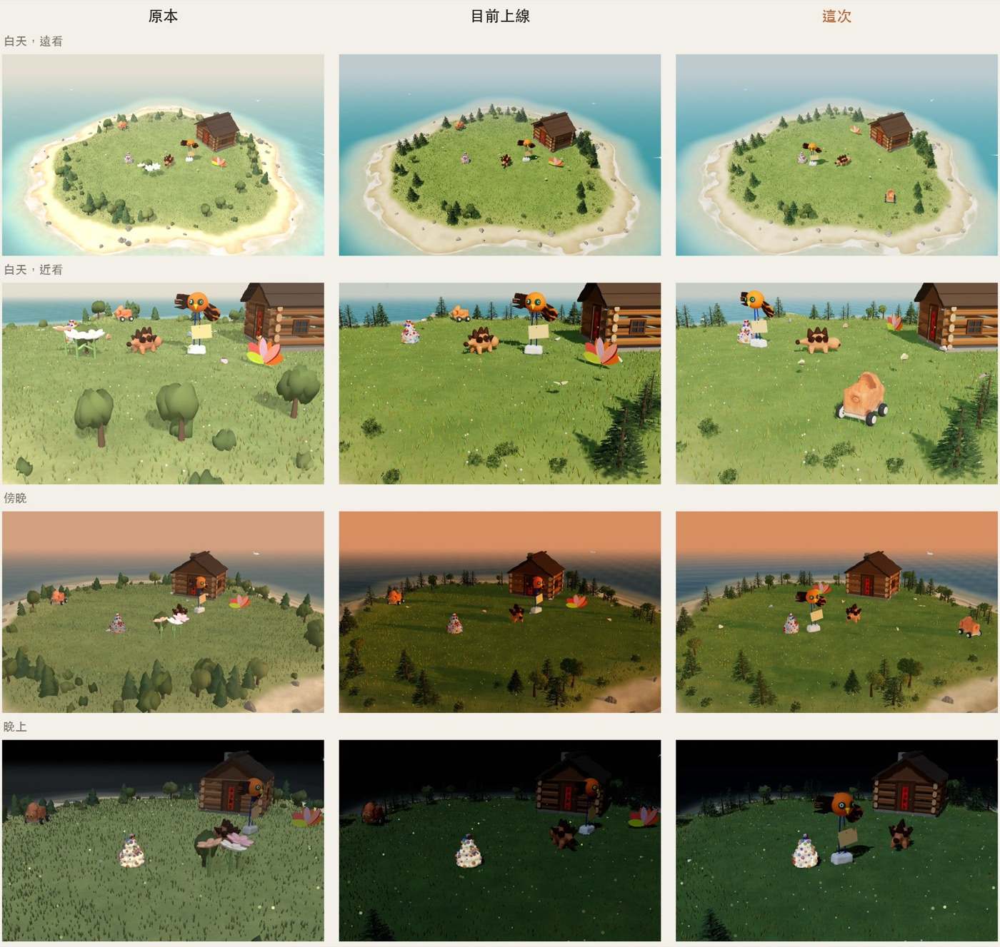
決策 03 的實驗：計程車用原本的 21 張照片丟進 Object Capture，37 秒得到這個結果。外型大致對了，但有破洞、霉斑和缺角，要照原則修。
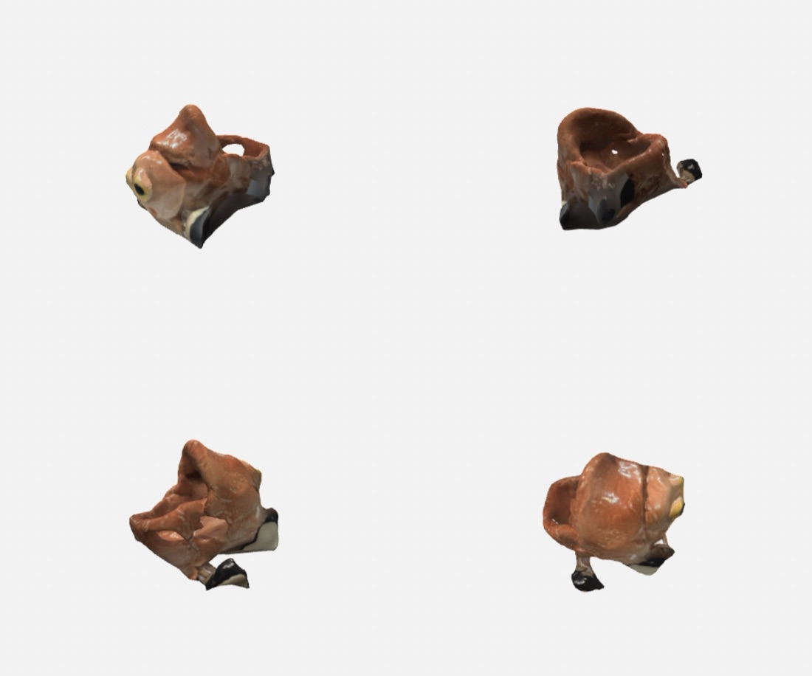
3D 重建、著色器、互動、AR 檔、部署、介紹影片，都由 AI 編碼代理實作。我負責定方向、定品質標準、在方案之間做決定，並驗收每一個結果。讓這件事穩定前進、不走偏的，是下面這些規則。
孩子做的東西，留下來，也活起來。
Aron · 產品負責人。本頁畫面都是產品實際截圖（名字已遮掉）；線上版本在 everkeep.aronlab.dev。